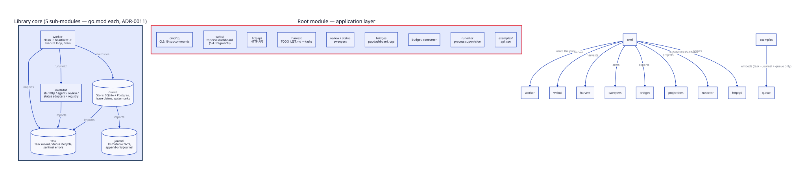
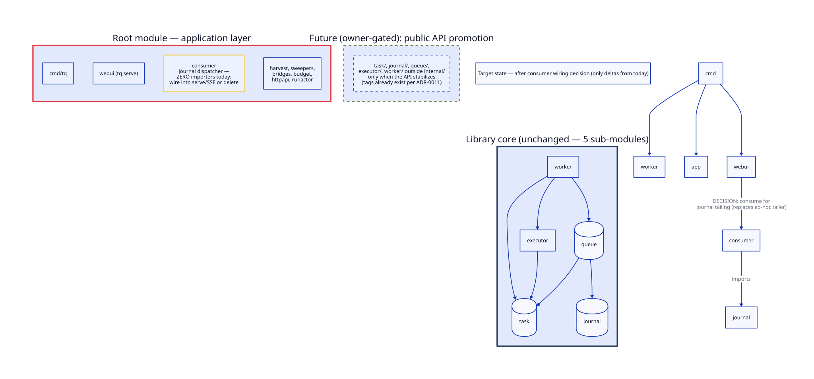

Point-in-time snapshot after the five-module split (ADR-0011, 2026-09-09). Metrics measured from the working tree via go list / exhaustive import greps; all 16 internal packages, 16,930 LOC (non-test, non-generated).
Dependency direction 5/5: acyclic, verified edge-by-edge; the library core (task, journal, queue, executor, worker) imports nothing upward and the compiler now enforces it (missing require/replace = build failure). Modularity 5/5: the five sub-modules have 0, 0, 2, 1, and 3 efferent internal deps respectively — a textbook funnel. Service orientation 3/3+3=6… honestly 3/5: this is a deliberate single-binary embed-first system (ADR-0001 rejected service-oriented options); the Store interface is the distribution seam (Postgres = the v0.2+ multi-machine path). Not a defect — a documented stance.
| Package | Afferent (who imports it) | Efferent | Assessment |
|---|---|---|---|
task | 12 (highest — the contract) | 0 | Ideal leaf: highest reuse, zero deps |
journal | 9 | 0 | Ideal leaf |
queue | 9 | 2 | Healthy hub; 3,149 LOC is the repo's biggest package — two Store implementations mirror each other by conformance contract (intentional) |
executor | 7 | 1 | Healthy; 12 files but one concern (execution adapters) |
worker | 1 (cmd/tq) | 3 | The composition point — afferent growth expected when the API promotes |
consumer | 0 | 1 | Dead production code — see finding 1 |
The ADR-0009 journal dispatcher (per-subscriber cursor, at-least-once in-order, lag observability) is not wired anywhere: no production package imports it; only tests do. It is polished, documented, dead. Decision needed: wire it into tq serve's journal tailing (replacing the webui's ad-hoc tailer) or delete it at the next major tidy-up.
The pool CLI composes every subsystem with inline flag parsing, actor wiring, and lifecycle. It works and is covered by e2e suites, but it is the single largest review blind spot in the repo. Extract actor-wiring and flag-block helpers before the next feature lands there.
15+ exported symbols have no non-test references (e.g. task.CanTransitionTo is used only in task's own tests; queue.ErrEmptyType, worker.ExpBackoff, executor.ResultLine…). For internal/ modules this is API-surface debt with zero consumers: prune or wire before promotion out of internal/, not after.
examples/api imports exactly task + journal + queue — the embeddable-library promise (ADR-0001) now has a module boundary to match, and future consumers get it without the app layer.

